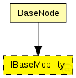
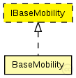

This documentation is released under the Creative Commons license
This documentation is released under the Creative Commons licenseInterface for mobility modules
The following diagram shows usage relationships between types. Unresolved types are missing from the diagram. Click here to see the full picture.
The following diagram shows inheritance relationships for this type. Unresolved types are missing from the diagram. Click here to see the full picture.
If a module type shows up more than once, that means it has been defined in more than one NED file.
| BaseNode (compound module) | (no description) |
| Name | Type | Default value | Description |
|---|---|---|---|
| coreDebug | bool |
debug switch for the core framework |
|
| x | double |
x coordinate of the nodes' position (-1 = random) |
|
| y | double |
y coordinate of the nodes' position (-1 = random) |
|
| z | double |
z coordinate of the nodes' position (-1 = random) |
// Interface for mobility modules moduleinterface IBaseMobility { parameters: bool coreDebug; // debug switch for the core framework double x; // x coordinate of the nodes' position (-1 = random) double y; // y coordinate of the nodes' position (-1 = random) double z; // z coordinate of the nodes' position (-1 = random) }
This documentation is released under the Creative Commons license